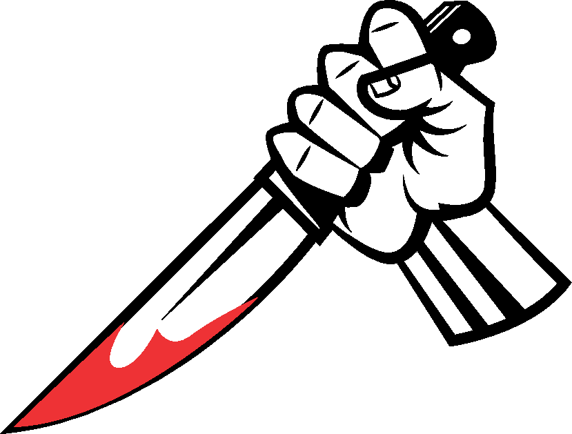
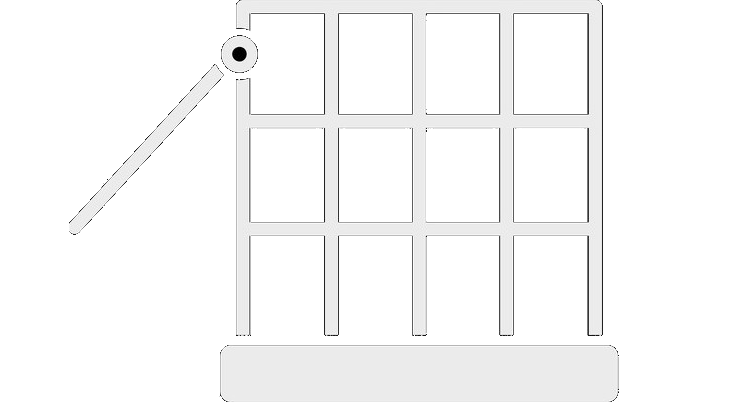

Produkty z lokalnego gospodarstwa, a nie hodowli przemysłowych.

Humanitarny Ubój
Dbamy, aby nasze psy były zawsze ogłuszone przed zabiciem.

Wolny Wybieg
Nasze psy mają możliwość przebywania na świeżym powietrzu.
Mięso z tuczu bez antybiotyków
Głównym celem i przesłaniem prowadzenia tuczu bez użycia antybiotyków jest obniżenie do niezbędnego minimum stosowania antybiotyków, przekazywanie wiedzy producentom o zasadach i możliwości prowadzenia tuczu bez antybiotyków, koordynacja przebiegu tuczu oraz zabezpieczenie wysokiej jakości surowca do produktów spełniających oczekiwania naszych konsumentów.